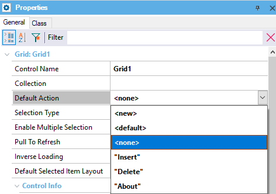

Default event to execute when selecting a Grid row. The default value calls the Detail. Syntaxcontrol. default Action Scope Objects: Panel, Work With Run-time/Design-timeThis property applies only at design-time. Samples
Suppose you have a Panel object including a Grid in its Layout and three events: Insert, Delete, and About. The following possible values will be offered for the Grid Default Action property:  Select the event you want to be executed when selecting a Grid row. |